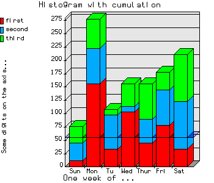
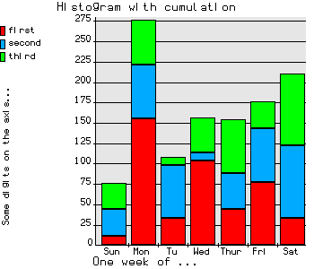
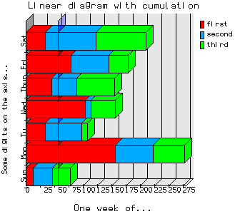
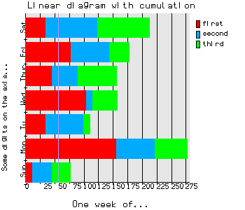
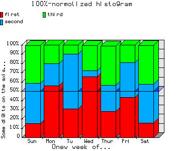
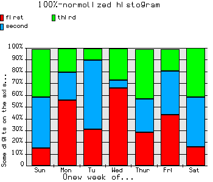
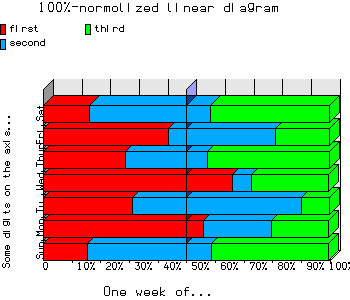
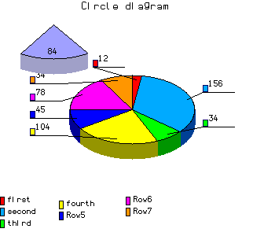
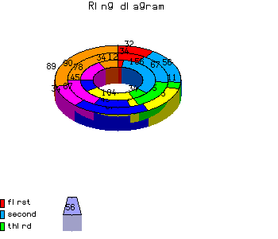
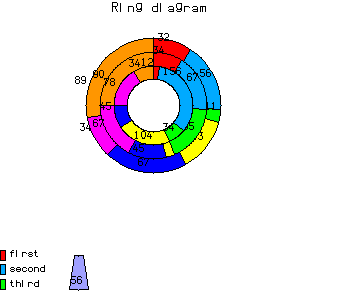

Библиотека деловой графики
Включает в себя классы для создания:
- гистограмм -
BgHistNew(sizeX, sizeY)
- гистограмм с накоплением -
BgHistCumulNew(sizeX, sizeY)
- нормированных гистограмм -
BgNormNew(sizeX, sizeY)
- трехмерных гистограмм -
BgHist3DNew(sizeX, sizeY)
- линейных диаграмм -
BgLineNew(sizeX, sizeY)
- линейных диаграмм с накоплением -
BgLineCumulNew(sizeX, sizeY)
- нормированных линейных диаграмм -
BgLineNormNew(sizeX, sizeY)
- круговых диаграмм -
BgCircleNew(sizeX, sizeY)
- кольцевых диаграмм -
BgRingNew(sizeX, sizeY)
- общий класс -
BgNew(bgType, sizeX, sizeY)
Атрибуты/свойства
| Название атрибута |
Значение атрибута |
| sizeX | размер рисунка в пикселах по оси X |
| sizeY | размер рисунка в пикселах по оси Y |
Методы/функции
создание
bg=BgHistNew(sizeX, sizeY)
bg=BgHistCumulNew(sizeX, sizeY)
bg=BgHistNormNew(sizeX, sizeY)
bg=BgHist3DNew(sizeX, sizeY)
bg=BgLineNew(sizeX, sizeY)
bg=BgLineCumulNew(sizeX, sizeY)
bg=BgLineNormNew(sizeX, sizeY)
bg=BgCircleNew(sizeX, sizeY)
bg=BgRingNew(sizeX, sizeY)
bg=BgNew(bgType, sizeX, sizeY) - общий класс, где bgType - тип графика (см. bggraph.ch)
Метод bg:setData(arr[, legend][, alignLeg][, signat]) --> .t./.f.
Инициализирует начальные значения,
arr - массив данных, на основе которых будет строиться график
legend - легенда, массив
alignLeg - размещение легенды (BG_ALIGN_NONE | BG_ALIGN_TOP | BG_ALIGN_BOTTOM | BG_ALIGN_LEFT | BG_ALIGN_RIGHT),
типы описаны в файле bggraph.ch
signat - значения категорий, массив
Метод bg:setInfo([title][, subTitle][, vrtTitle]) --> .t.
Задает заголовок к графику, подвал и подпись к шкале Y.
Метод bg:setAverage(type[, value]) --> .t./.f.
Устанавливает/снимает режим рисования среднего значения,
type - режим:
0 - не показывать среднее значение
1 - показать среднее значение
2 - показать "критическое" значение
3 - показать и среднее и "критическое" значения
value - "критическое" значение.
Attantion: на текущий момент реализовано только два режима 0/1.
Метод bg:setVolume([volume]) --> volume
Включить/выключить рисование графика в объемном варианте. Метод существует
во всех классах, за исключением трехмерной гистограммы - этот график
всегда рисуется в объеме.
volume - .t./.f. включить/выключить объем
Если метод вызывается без параметра, то прежнее значение volume инвертируется.
Метод bg:drawImage() --> .t./.f.
Нарисовать график.
Метод bg:storeImage(type, filename) --> .t./.f.
Записать полученный рисунок в файл.
type - тип файла GDFILE_PNG | GDFILE_GD | GDFILE_GD2 | GDFILE_XBM | GDFILE_JPEG ,
по умолчанию тип файла GDFILE_PNG
filename - имя файла
Простейший пример использования:
#include "gdinfo.ch"
#include "bggraph.ch"
local bg, data, legend, alignleg, signat
bg := BgHistNew(300, 300)
data := {{12, 156, -34, 104, 45, 78, -34},{34,67, 65,11,-45,-67,90}, {32, 56, 11, 43, 67, 34, 89}}
legend := {"first", "second", 'third', 'fourth'}
signat := {"Sun", "Mon", 'Tu', 'Wed', "Thur", "Fri", "Sat"}
alignleg := BG_ALIGN_RIGHT
bg:setData(data, legend, alignleg, signat)
bg:setInfo("Histogram", "One week of...", "Some digits on the axis...")
/* drew graphic in volume */
bg:setAverage(1)
bg:setVolume(.t.)
bg:drawImage()
/* and store it */
bg:storeImage(GDFILE_PNG, "hist1.png")
/* now the same but 2D */
bg:setAverage(0)
bg:setVolume(.f.)
bg:drawImage()
bg:storeImage(GDFILE_PNG, "hist2.png")
И еще один пример:
#include "gdinfo.ch"
#include "bggraph.ch"
local bg, data, legend, alignleg, signat
bg := BgNew(BG_TYPE_HIST, 300, 300)
data := {{12, 156, -34, 104, 45, 78, -34},{34,67, 65,11,-45,-67,90}, {32, 56, 11, 43, 67, 34, 89}}
legend := {"first", "second", 'third', 'fourth'}
signat := {"Sun", "Mon", 'Tu', 'Wed', "Thur", "Fri", "Sat"}
alignleg := BG_ALIGN_RIGHT
bg:setData(data, legend, alignleg, signat)
bg:setInfo("Histogram", "One week of...", "Some digits on the axis...")
/* drew graphic in volume */
bg:setAverage(1)
bg:setVolume(.t.)
bg:drawImage()
/* and store it */
bg:storeImage(GDFILE_PNG, "hist1.png")
/* now the same but 2D */
bg:setAverage(0)
bg:setVolume(.f.)
bg:drawImage()
bg:storeImage(GDFILE_PNG, "hist2.png")
Гистограмма обыкновенная
отражает значения различных категорий
|
|---|

| 
|

| 
|
Гистограмма с накоплением
показывает вклад каждой категории в общую сумму
|
|---|
| 
| 
|
| 
| 
|
Гистограмма нормированная на 100%
показывает ДОЛЮ каждой категории в общем котле
|
|---|
| 
| 
|
|
| 
|
Гистограмма объемная
отражает значения различных категорий с раскладкой по рядам
|
|---|

|
Круговая диаграмма
показывает вклад каждой категории в общую сумму
|
|---|
| 
| 
|
Кольцевая диаграмма
показывает вклад каждой категории в общую сумму, подобна круговой диаграмме,
но может отражать несколько рядов данных
|
|---|
| 
| 
|
© Е.Корнилова, alena@itk.ru, 2000